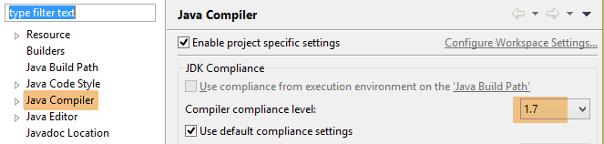
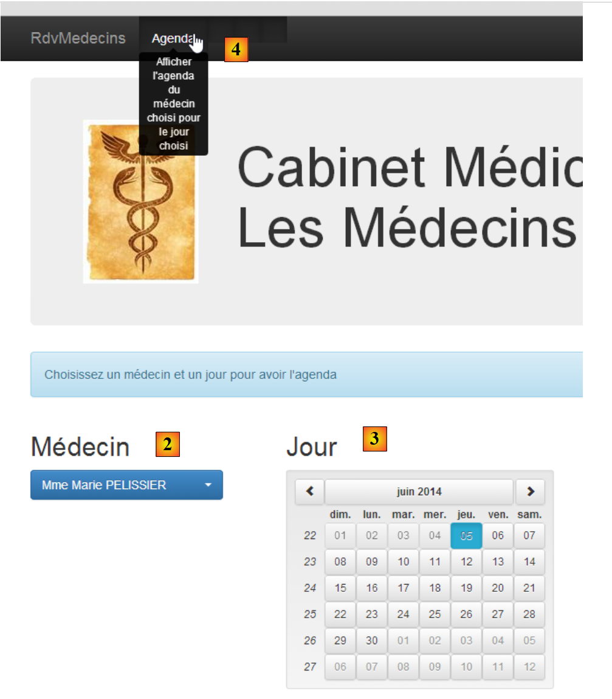
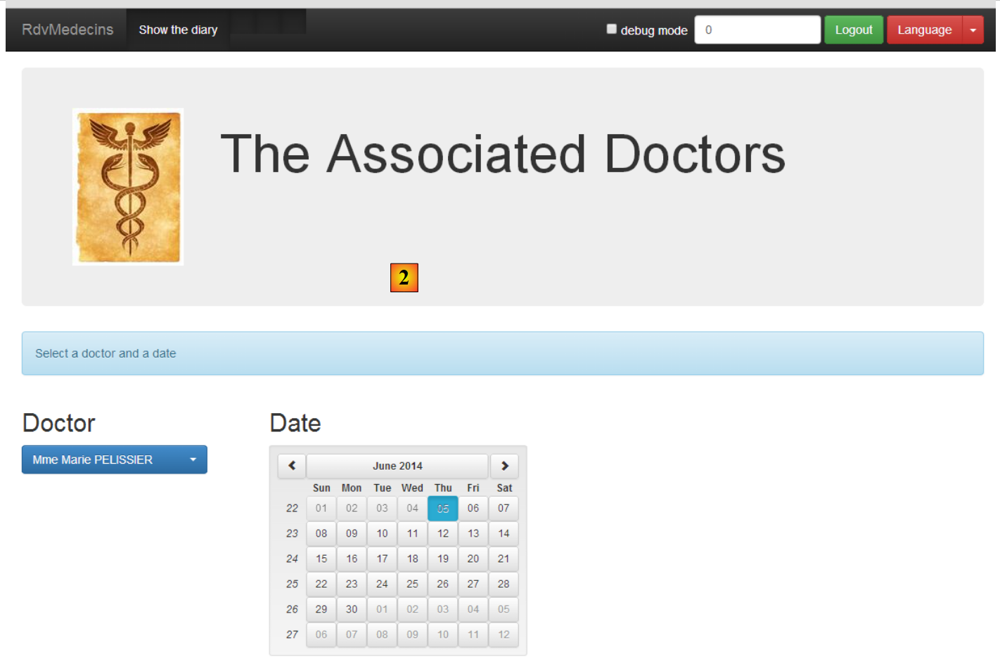

1. Introduction
The PDF of the document is available |HERE|.
The examples in the document are available |HERE|.
Here, we propose to introduce two frameworks using a client/server example:
- AngularJS used for the client. For simplicity, it will be referred to as Angular hereafter;
- Spring 4 used for the server. For simplicity, it will be referred to as Spring hereafter;
Understanding this document requires certain prerequisites:
- an intermediate level of Java EE;
- knowledge of JPA (Java Persistence API), which will be used to access a database;
- knowledge of at least one previous version of Spring to understand the philosophy of this framework;
- experience using Maven to configure Java projects;
- a basic understanding of HTTP communication in a web application;
- common HTML tags;
- basic knowledge of JavaScript;
Other necessary knowledge will be introduced and explained as the case study progresses.
This document is not a course and is incomplete in many respects. To learn more about the two frameworks, you can use the following references:
- [ref1]: the book "Pro AngularJS" by Adam Freeman, published by Apress. It is an excellent book. The source code for the examples in this book is available for free at [http://www.apress.com/downloadable/download/sample/sample_id/1527/];
- [ref2]: the official AngularJS documentation [https://docs.angularjs.org/guide]
- [ref3]: the book "Spring Data" from O'Reilly [http://shop.oreilly.com/product/0636920024767.do], which covers the use of the [Spring Data] framework for accessing data, whether from relational databases or non-relational databases (NoSQL);
- [ref4]: the book "Pro Spring 3" published by Apress. This is the predecessor to Spring 4, but the main concepts are already covered;
- [ref5]: the Spring 4 reference documentation [http://docs.spring.io/spring/docs/current/spring-framework-reference/pdf/spring-framework-reference.pdf].
The sources used for this document are those cited above, plus the indispensable [http://stackoverflow.com/] for the numerous debugging sessions.
1.1. The Application Architecture
The application under consideration will have the following architecture:

- In [1], a web server delivers static pages to a browser. These pages contain an AngularJS application built on the MVC (Model–View–Controller) pattern. The model here encompasses both the views and the domain, represented here by the [Services] layer;
- the user will interact with the views presented to them in the browser. Their actions will sometimes require querying the Spring 4 server [2]. The server will process the request and return a JSON (JavaScript Object Notation) response [3]. This response will be used to update the view presented to the user.
1.2. Tools Used
In this document, the following development tools are used:
- Spring Tool Suite for the Spring server: available as a free download;
- WebStorm for the Angular client: a one-month trial version is available for free download;
- Wampserver for managing the MySQL 5 database: available for free download;
The installation of these and other tools is described in Section 6.
1.3. Application Features
The sample code is available |HERE| as a downloadable ZIP file.
 |  |
- The server is contained in the [rdvmedecins-metier-dao-v2] and [rdvmedecins-webapi-v3] folders;
- The client is located in the [rdvmedecins-angular-v2] folder;
- The SQL script for generating the MySQL5 database is in the [database] folder;
1.3.1. Creating the Database
To test the application, we first create the database using the SQL script [dbrdvmedecins.sql]. We use the [PhpMyAdmin] tool from WampServer:
 |
- In [1], select the [phpMyAdmin] tool from WampServer;
- In [2], select the [Import] option;
 |
- in [3], select the file [database/dbrdvmedecins.sql];
- in [4], run it;
- in [5], the database is created.
1.3.2. Web Server / JSON Implementation
Using Spring Tool Suite (STS), import the two Spring 4 server Maven projects:
 |
- In [1] and [2], import the Maven projects;
- in [3], we specify the parent folder for the two projects to be imported;
 |
- in [3], the imported projects. The projects may contain errors. Each of them must use a compiler >=1.7:
 |
Therefore, a JVM version >=1.7 is required:
 |
Once there are no more JVM errors, we can run the [rdvmedecins-webapi-v3] project:
 |
- In [4], [5], and [6], we run the [rdvmedecins-webapi-v3] project as a Spring Boot application;
We then get the following logs in the STS console:
1.3.3. Implementing the Angular client
We open the [rdvmedecins-angular-v2] folder with WebStorm:
 |
- In [1], select the [Open Directory] option;
- in [2], select the [rdvmedecins-angular-v2] folder;
 |
- in [3], the folder tree;
- In [4], select the application’s main page [app.html];
- in [5], open it in a modern browser;
 |
- in [6], the application’s login page. This is an appointment scheduling application for doctors. This application has already been covered in the document Introduction to JSF2, PrimeFaces, and PrimeFaces Mobile frameworks;
- in [7], a checkbox that allows you to enable or disable [debug] mode. This mode is indicated by the presence of the [8] frame, which displays the model of the current view;
- in [9], an artificial wait time in milliseconds. It defaults to 0 (no wait). If N is the value of this wait time, any user action will be executed after a wait time of N milliseconds. This allows you to see the wait management implemented by the application;
- in [10], the Spring 4 server URL. Based on what preceded, this is [http://localhost:8080];
- in [11] and [12], the username and password of the user who wants to use the application. There are two users: admin/admin (login/password) with a role (ADMIN) and user/user with a role (USER). Only the ADMIN role has permission to use the application. The USER role is included solely to demonstrate the server’s response in this use case;
- in [13], the button that allows you to connect to the server;
- in [14], the application language. There are two: French (default) and English.
 |
- at [1], you log in;
 |
- once logged in, you can choose the doctor with whom you want an appointment [2] and the date of the appointment [3];
- In [4], you request to view the selected doctor’s schedule for the chosen day;
 |
- Once the doctor’s schedule is displayed, you can book a time slot [5];
 |
- In [6], select the patient for the appointment and confirm your selection in [7];
 |
Once the appointment is confirmed, you are automatically returned to the schedule where the new appointment is now listed. This appointment can be deleted later [7].
The main features have been described. They are simple. Those not described are navigation functions for returning to a previous view. Let’s conclude with language settings:
 |
- in [1], you switch from French to English;
 |
- in [2], the view switches to English, including the calendar;